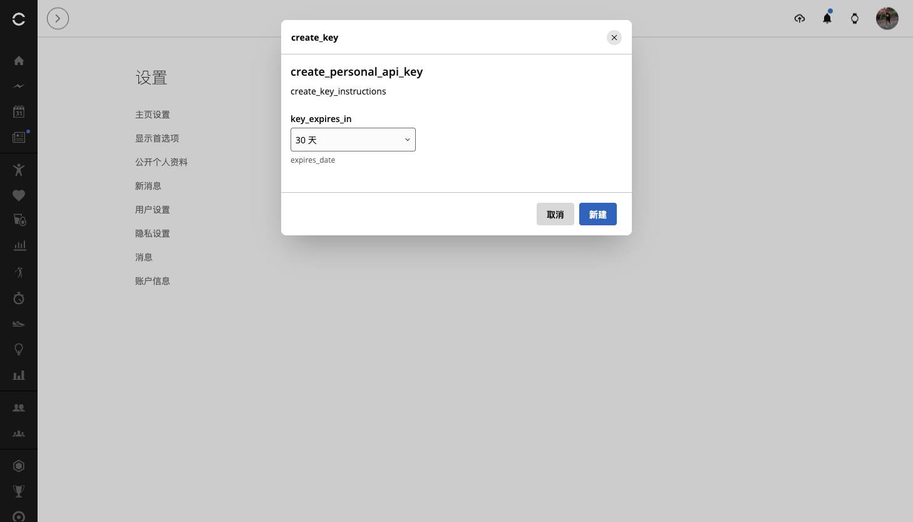
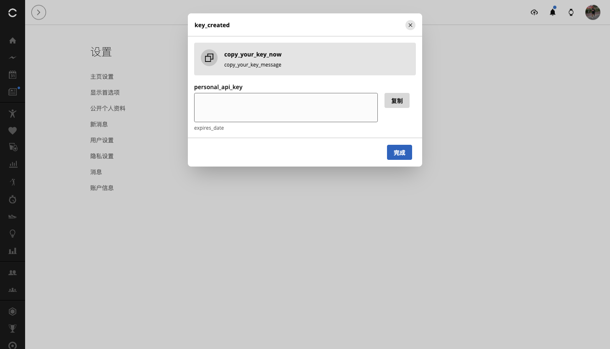

作者：李二牛 · 更新于 2026 年 10 月 22 日
佳明提供了 Garmin Connect Personal API：自己生成一把 API Key，交给本机程序，就能读取官方开放的个人数据。接入程序不需要拿到你的佳明密码。官方说明
这篇文章带你从申请入口走到连接验证，也把大陆账号本次遇到的问题说清楚。生成成功和读取成功，是两个需要分别检查的步骤。 下方六张图均来自本次大陆账号操作，敏感内容已移除。
第一步：先看它适不适合你
Personal API 面向个人读取自己的数据，不是面向多用户商业服务的统一授权方案。当前官方文档列出 26 个 GET 数据接口，可以获取活动、睡眠、步数、心率、HRV、血氧、压力、身体电量等，也支持下载原始活动文件。呼吸方面有日汇总、睡眠等字段，不能直接等同于完整全天曲线。官方 FAQ · 接口文档
创建或删除训练课表、调整日历排期、Webhook 推送，当前均未列入这套公开接口。 插件另有 Connect 网页会话（原有方式），继续用于训练管理。它虽然在 Garmin 官方页面登录，其网页会话调用并不等于 Personal API 官方授权，两种接入方式按账号独立配置。

图 1：先从 Garmin 官方说明进入，认准 developer.garmin.com。
第二步：登录对应地区，找到密钥页面
国际账号可以从官方说明中的链接进入 Personal API Key 页面，在 Garmin 官方网页完成登录。
大陆账号需要单独检查。本次实测，普通设置导航没有出现新入口，但登录大陆站后，直达 大陆 Personal API 页面 可以看到创建按钮。能看到页面，只能确认入口可访问。

图 2：大陆页面显示 create_key，部分文案尚未翻译。
第三步：阅读条款，选择有效期
点击 Create Key／创建密钥，阅读并接受页面条款，再选择有效期。官方提供 30 天、90 天、180 天和一年；首次试用可以先选 30 天。
本次大陆页面的条款只显示 personal_api_* 占位符。下图记录这个异常，不代表条款已经正常展示；遇到相同情况，应先确认可读条款或等待页面修复。本次是在账号所有者明确授权后继续测试的。

图 3：占位符不是完整条款，不能据此判断具体授权内容。

图 4：本次选择最短的 30 天有效期，再点击新建。
第四步：复制一次，保存在本机
创建后，完整 API Key 只显示一次。先保存，再点完成；丢失后需要删除旧 Key、重新生成。API Key 与访问令牌都属于敏感凭据，不要发到 AI 聊天、评论区或教程截图中。
可以使用密码管理器，或存入仅自己可读的本机文件。macOS／Linux 可将密钥文件权限设为 600，父目录设为 700；Windows 使用仅当前用户可访问的权限。文件权限保护不等于加密。

图 5：这里只展示创建结果；真实密钥已从截图中移除。
完成后重新加载页面，检查是否仍有密钥记录。需要停止授权时，在这里删除 Key；官方说明，关联访问令牌也会随之失效。

图 6：本次大陆账号刷新后仍保留记录，但还要继续验证 API 请求。
第五步：接入 DeepSeek Harness 或其他 Agent
以下是本次开发版的接入方法；npm 已发布的 0.1.18 尚不包含 Personal API 功能。 新功能正式发布后，再按对应版本安装，不要以为安装当前 latest 就已经具备它。
在包含此功能的 Harness 插件设置中：点击 + 添加账号，选择 官方 Personal API Key（只读），填写账号别名和 API Key，再保存并点击 验证连接。这种方式不要求邮箱，也不需要在插件中输入佳明密码。地区必须与创建 Key 的区域对应：国际区用 .com，大陆区用 .cn，不混用。
其他 coding agent 可通过 MCP 使用。将本次开发版构建好，把下面两个绝对路径换成自己的路径，重新加载 MCP：
{
"mcpServers": {
"garmin-personal": {
"command": "node",
"args": ["/absolute/path/to/garmin-connect-plugin-for-dsh/lib/mcp.js"],
"env": {
"GARMIN_PROVIDER": "personal",
"GARMIN_ACCOUNT": "my-garmin",
"GARMIN_REGION": "global",
"GARMIN_PERSONAL_API_KEY_FILE": "/absolute/private/path/garmin-personal.key"
}
}
}
}文件只存密钥本身，不加 JSON 包装。大陆账号将 GARMIN_REGION 改为 cn，服务会使用 personal.connectapi.garmin.cn；国际账号的 global 对应 personal.connectapi.garmin.com。配置中填写文件路径即可，不把真实 Key 放进可分享的配置。插件包含所需 SDK，无需额外安装 TypeScript 库。
第六步：先做小查询，再分析趋势
先让 Agent 读取当前账号资料，确认连接和目标账号；成功后再查最近一天的步数、睡眠，最后查询一段时间的 HRV 或活动。只有返回真实数据，才算完整走通。
API Key 会先换成访问令牌，再调用数据接口。令牌最长有效 24 小时，且不超过 Key 本身有效期；官方不提供 refresh token，过期后要用 Key 重新获取。界面里的“验证连接”不是再次登录佳明。认证 FAQ
大陆账号本次到底成功了吗？
同日补测：国际账号新建独立 Key 请求 .com，令牌交换、8 项 SDK 读取及 5 项真实 MCP 工具读取均通过；大陆 Key 请求 .cn 仍返回 526，暂时无法访问。 两区 Key 分开保存与使用，没有混用或跨区回退。完整测试报告
截至本文日期，大陆账号已创建 Key；本轮用新 TS SDK 请求对应 .cn 端点，仍未跑通读取链路：
| 检查项 | 本次结果 |
|---|---|
| 创建 30 天 Key、刷新后保留记录 | 成功 |
用新 TS SDK 将大陆 Key 发往对应 .cn 端点 | 换取令牌返回 HTTP 526／TOKEN_EXCHANGE_FAILED |
| 取得令牌、读取账户设置或健康数据 | 未完成；未取得令牌，也未执行后续读取 |
国际 Key 使用 .com，大陆 Key 使用 .cn。SDK 支持地区配置，不等于端点本次可用。大陆端点本次暂时无法访问，尚未验证大陆读取成功；这不等于大陆账号永久不受支持。
我们参考 Garmin 官方 Python 客户端，已建立独立仓库 connect-personal-api-ts，维护 TypeScript 实现。新 SDK 专注 Personal API Key 换取令牌和读取数据。仓库代码已建立，本轮尚未发布 npm，使用时以包含此功能的实际版本为准。
让 AI 分析数据，凭据留在本机。先验证一个账号、一项读取，再逐步扩大使用范围。